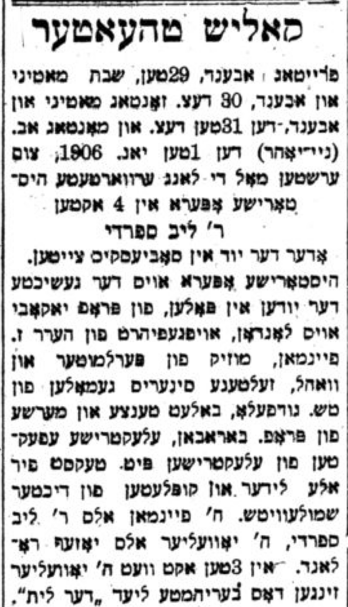

32 January 4th, 1947
Link to Forverts edition
Dora Weissman and I in the roles of Paye and Shmaye. – David Kessler’s expert opinion about a play. – How Mogulesko taught me to perform a role.
Shpachner opened the season1 in the Kalich Theater2 with a piece written by the actor Sigmond Feinman called Der Yud in Sobietski’s Zayten3. The old Yiddish actor Sigmond Feinman really loved to write plays. It wasn’t enough for him to be an actor; he really wanted to be a playwright too. But in Yiddish theater circles, it was said that, once when he wrote a play, he wanted David Kessler to play the lead role. But he knew that Kessler didn’t think highly of his writing so of course he wouldn’t want to hear about his play. So, Feinman made up a story that he had actually translated the play from Russian, and it was it was originally written by Gorky. Maxim Gorky…
He wanted to ensure that Kessler would listen to the whole play, because he knew that the great artist David Kessler really held Gorky in high esteem… But as soon as he read the first few pages, Kessler began to frown. Shrugging his shoulders, he grimaced, and you could tell that he was puzzled and something did not sit right with him. And when he finished reading the first act, he grabbed Feinman by the shoulders with both hands, stared sharply at him with his two big eyes, and roared:
– Feinman-oiniye4, you wrote this masterpiece, not Gorky! You did - not Gorky! To the devil with you!…
The great artist, who was hardly educated, nevertheless had the good sense to know when someone was trying to pull a fast one. He immediately saw that Gorky could not have written this. And when Feinman was admitted that he was the real author, Kessler said:
– Nu, of course it was you!… I knew it…Only someone who thinks with their knees and writes with their elbows could have written such a thing…

This is how he usually spoke about a play that he didn’t like, and this time he was even more biting…
But Feinman was not deterred by the fact that David Kessler did not care for his writing, and he kept writing plays. And when someone put on one of his plays, he was in seventh heaven. He didn’t care about what “royalties” he would get, just that he wasn’t only an actor - but also a playwright…
Feinman did well with his play Der Yud in Sobietski’s Zayten. This play was a great success in the Kalich Theater, and it was played for two more seasons. It goes without saying that the lead role of the great Rabbi who stands up for the Jews was played by Feinman himself, since he loved the role very much, and he was sure that no other actor would play it as well as him.
In the play, Dora Weissman and I again played as a couple, and it was just as Shpachner promised - we had enough to sing and say and dance in our roles. Dora’s character was named Paye, and mine was named Shmaye, and the audience greatly enjoyed the scene we played together. Everyone was lively and joyous, and the crowd went wild for Paye and Shmaye.
The lively little couple that Dora Weissman and I created in the play Der Yud in Sobietski’s Zayten brought a lot of joy to thousands and thousands of Jews, and everywhere you went, you’d hear people talking about Paye and Shmaye. It was enough to just mention those two names for people to start laughing.
In the middle of the week in the Kalich Theater, we put on other plays. One of them, I remember, was called Di Yerushe, but I no longer remember the name of the playwright6 I only remember that I played the role of some kind of snub-nosed cavalier who was courting a beautiful young woman. She tells him that she will only marry him if he goes to Paris and gets himself a better nose. He does what she asks and goes to Paris to get a smaller nose, but when he returns, he is left only with his new nose - because it turns out the beautiful young woman had cheated on him.Just went he left for Paris, she up and married someone else…
It goes without saying that the role of the beautiful maiden, who the snub-nosed cavalier courted and was so in love with, was played by Dora Weissman, and she brought a lot of life and humor into the role. Mogulesko wrote a little ditty for the cavalier to sing, and even now I remember the nign7:
I’m an orphan, a nebech –
I’ve lost the tip of my nose.
And gone with it is my beautiful maiden – Now I’m here alone.
Oy vey iz mir, my beloved little nose!
Oy vey iz mir, my beloved little nose!
Gone with it is my beautiful maiden, my love,
And miserable and snub-nosed, I am here alone.
In general, Mogulesko helped me out anytime I needed some kind of little song in a comical role. Whenever I asked him for one, he not only wrote it, but he practiced it with me to show me how to sing it. Not just for me, but also for other actors, Mogulesko on many occasions showed a fine, authentic collegiality. He was always ready to help you prepare for a role, to show you what to do and how to embody the character you were playing.
Once, when I appeared in “Professor” Horowitz’s play Dos Poylishe Yingl, I played the role of the shadchan Shmuel Gorgel, a role in which Mogulesko so excelled that he simply had no equal. I asked him if he would help me prepare for this role and show me how he played it so I could imitate his acting. It was hard for me to come to him with this request, because in those days he was ill again and he rarely performed. I remembered that I thought he would of course be upset to hear I was given the role, and he would consider it insolent and tactless that I would ask him to show me how to play a role he was so excellent in.
But took it exactly the opposite way and gladly showed me how to play the role, and on the evening of the performance he came to the theater to see me and encouraged me8. Now I will recount something that reflects who Mogulesko was as an artist:
After the performance, Mogulesko told me that overall I did a good job in the role, but in the third act I made him look like a fool…
At first I didn’t understand. Only when he explained to me did I realize that he was right. I began to see why no one applauded me when I left the stage at the end of the scene, even though audiences usually applauded this scene.
The scene takes place in the wealthy Rabbi’s home, and the shadchan sees that the table drawer is open with money sitting in it. As a poor Jew, he needs money. The urge comes over him to take a little, even though he knows that stealing is a sin. He starts calling for the man of the house, “Rabbi Kalman! Come here, Rabbi Kalman!” But Rabbi Kalman is very busy, so he doesn’t come. T poor shadchan cannot resist the temptation, and he grabs some coins from the open drawer and leaves.
While playing this scene, Mogulesko was fastidious about every little detail, acting even with his eyes to hold the whole audience in suspense. When he saw the open drawer, his looked at it so acutely that the whole audience was fixated on his gaze, and had no choice but to look at the drawer along with him. And when he called out for Rabbi Kalman, you could hear in his voice that he wanted the Rabbi to rescue him from sin. He didn’t call out for Rabbi Kalman one time, but instead three or four times. And after each time, when the he still didn’t come, Mogulesko reached out with a trembling hand and grabbed a few coins and stashed them in his pocket, and then again called out for Rabbi Kalman. When he finished stashing all the coins away in his pocket, he left.
This is how Mogulesko used to perform this scene, which audiences really loved to see because he performed it with such a unique artistic charm. Every little movement, every dart of his eye, was precisely planned and expressed with feeling. But when I played the scene, I didn’t think about it as much, and I didn’t fully grasp it when he showed me how to play it. And so in the scene I simply grabbed all the money at once and left. That’s why the scene went poorly and the audience didn’t applaud. I didn’t deserve any applause…
From then on, I knew that when Mogulesko showed me how to perform a role, or when I saw him on stage, I should not take my eyes off him for even one second. I had to watch every little thing he did. Missing something was like losing a link from a gold chain…
And he, the great artist, the master of character development on the Yiddish stage, was so modest that whenever he had to play a role that a different actor besides him had played before, he would go to them and ask that them to show him how to play the role. He once even came to me with such a request and asked me to show him how to play a well-known role of a butcher in some play whose name I don’t remember. Berl Bernstein used to play this role, and he played the butcher in his usual way, dancing a hopke and doing a yom pom pom, waving his hands around and raising them in the air. I confess, when I was given the role, I imitated Bernstein more than a little, and I told this to Mogulesko when I showed him how to play the role. And Mogulesko told me in response,
– That’s not bad, that’s okay. Show me everything. Let me see.
And he watched me do it all, asking me questions about it over and over again, just as he would teach other actors how to play his roles. And when later I went to see him perform the role of the butcher, I watched with my eyes wide open because I wanted to take it all in, how Mogulesko transformed the butcher into something I had never seen before. This was truly a whole different butcher - not mine, not Bernstein’s, but a real life butcher just as you would see in a butcher shop. Even though he performed the role as I had shown him, he also made it something else entirely. And it could not have gone any other way, because nobody was as great a performer as he was. There has never been anyone else like Mogulesko on our Yiddish stage.
When you think about it, it’s been more than thirty years since he passed away9, and still no one has turned his memoirs, which were published in Forverts, into a book. Mogulesko himself, I know, used to come to the newsroom of the Forverts, and he told his life story which Abe Cahan wrote. But Abe Cahan didn’t finish it because he got too busy, so he handed the writing over to Leon Gottlieb, and I know that Gottlieb took it over with love, because just like Abe Cahan, he was also greatly impressed by Mogulesko’s talent.
Mogulesko’s memoirs really should be published as a book, and everyone should read it. Not only Yiddish actors, but anyone who is interested in the Yiddish theater and the origins of the great Yiddish artist. Perhaps some folks at the Hebrew Actors' Union have thought about doing this? It would be a beautiful monument to the great artist Mogulesko, who had a profound impact and left a deep mark on the Yiddish theater not only in America, but across the whole world.
1905/1906↩︎
formerly known as the Windsor Theater↩︎
Sobietsky was John III Sobieski, the King of Poland from 1629-1696. Sam is not correct about the debut: This play did not open the season, but rather premiered in December 1905, as shown in the advertisement to the right. It is possible to further speculate on why he was mistaken about the premiere date. The first reason, of course, is that this occurred over 40 years ago in Sam’s life relative to when he wrote his memoirs. The second reason is that Sam was likely ill at the time suffering from severe stomach cramping (cause unknown to us), and his debilitating pain may have influenced his recollection of this time of his life. We know he was suffering because of this article/advertisement from March 9th, 1907 where he describes his chronic illness - and how the doctors in the Vienna Medical Office on 106 E 11th St cured him when no one else was able to. Indeed, it seems Sam became somewhat of a celebrity spokesperson for the Viennese doctors, with the same article/advertisement reprinted in future newspapers (both in Di Vahrhayt and other newspapers) to further promote the medical institute.↩︎
a nickname↩︎
Translation of advertisement for Der Yud in Sobietski’s Zayten:
↩︎Kalich Theater
Friday Dec. 29th evening, Shabbes Dec. 30th matinee and evening, Sunday Dec. 31st matinee and evening, and Jan. 1st (New Years) 1906, for the first time the long-awaited historical opera in four acts Rabbi Leyb Sephardi or Der Yud in Sobietski’s Zayten. Historical opera about the Jews in Poland, written by Professor Yakoby of London, staged by Herr Z. Feinman, music by Perlmutter and Wohl, extraordinary scenery painted by T.S. (Ch?) Godfellow, ballet, dances, and marches by Professor Baraban, electric effects by the electrician Pete. Lyrics for all songs and couplets by the poet Smulewitz. Herr Feinman as Rabbi Leyb Sephardi, Herr Juvelier as Yosef Roland. In Act 3 Juvelier will sing the well-known song “Der Lis” (דער לית).
The playwright’s name was George (Gershon) Zeikin; His biography available from Volume 1 page 774 of the Leksikon fun Yidishn Teater.↩︎
A different song that Sam sang in this role was called “It’s just my nose that’s to blame.” You can find the sheet music here as well as a translation and modern-day rendition of it here.↩︎
This event is also mentioned in Mogulesko’s Leksikon fun Yidishn Teater entry, as copied here from the translation available on the Museum of Family History website:
↩︎Leon Blank similarly recalls: “(Sam) Kasten had to play the role of ‘Shmuel Gorgel the Matchmaker’ in ‘Professor’ Horowitz’s ’Dos poylishe yingel (The Polish Youth)” – a role, in which Mogulesko had strongly excelled in. … Without a scrap of jealousy, with the best feeling, and with the earliest wish, Mogulesko showed Kasten how he handled the role, how he played it, and in the evening of the performance he came to the theatre. On various occasions, one could see Mogulesko’s close relationship with his other colleagues. He never provided anyone with a shot. Turned out, he was always ready to help that out -demonstrating, learning, acting in a [certain] way. When he was in a play with another comedian, he saw that the latter should have no smaller role, and no less with a song, And, in fact, the songwriter himself wrote to another comedian and himself adapted the music.”
Mogulesko died in 1914, as Sam will tell us about later.↩︎